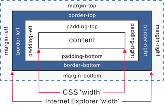
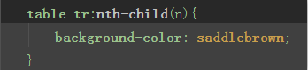
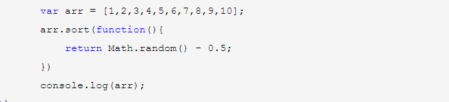

Web前端面试题汇总
以下是收集一些面试中经常会遇到的经典面试题
HTML部分
1、你做的页面在哪些流览器测试过？这些浏览器的内核分别是什么?
IE: trident内核
Firefox：gecko内核
Safari：webkit内核
Opera：以前是presto内核，Opera现已改用Google Chrome的Blink内核
Chrome：Blink(基于webkit，Google与Opera Software共同开发)
2、每个HTML文件里开头都有个很重要的东西，Doctype，知道这是干什么的吗？
<!DOCTYPE>声明位于文档中的最前面的位置，处于 <html> 标签之前。此标签可告知浏览器文档使用哪种 HTML 或 XHTML 规范
3、Quirks模式是什么？它和Standards模式有什么区别
从IE6开始，引入了Standards模式，标准模式中，浏览器尝试给符合标准的文档在规范上的正确处理达到在指定浏览器中的程度。
在IE6之前CSS还不够成熟，所以IE5等之前的浏览器对CSS的支持很差， IE6将对CSS提供更好的支持，然而这时的问题就来了，因为有很多页面是基于旧的布局方式写的，而如果IE6 支持CSS则将令这些页面显示不正常，如何在即保证不破坏现有页面，又提供新的渲染机制呢？
在写程序时我们也会经常遇到这样的问题，如何保证原来的接口不变，又提供更强大的功能，尤其是新功能不兼容旧功能时。遇到这种问题时的一个常见做法是增加参数和分支，即当某个参数为真时，我们就使用新功能，而如果这个参数 不为真时，就使用旧功能，这样就能不破坏原有的程序，又提供新功能。IE6也是类似这样做的，它将DTD当成了这个“参数”，因为以前的页面大家都不会去写DTD，所以IE6就假定 如果写了DTD，就意味着这个页面将采用对CSS支持更好的布局，而如果没有，则采用兼容之前的布局方式。这就是Quirks模式（怪癖模式，诡异模式，怪异模式）。
区别：
总体会有布局、样式解析和脚本执行三个方面的区别。
盒模型：在W3C标准中，如果设置一个元素的宽度和高度，指的是元素内容的宽度和高度，而在Quirks 模式下，IE的宽度和高度还包含了padding和border。

设置行内元素的高宽：在Standards模式下，给<span>等行内元素设置wdith和height都不会生效，而在quirks模式下，则会生效。
设置百分比的高度：在standards模式下，一个元素的高度是由其包含的内容来决定的，如果父元素没有设置百分比的高度，子元素设置一个百分比的高度是无效的用margin:0 auto设置水平居中：使用margin:0 auto在standards模式下可以使元素水平居中，但在quirks模式下却会失效。
4、div+css的布局较table布局有什么优点？
- 改版的时候更方便 只要改css文件。
- 页面加载速度更快、结构化清晰、页面显示简洁。
- 表现与结构相分离。
- 易于优化（seo）搜索引擎更友好，排名更容易靠前。
5、a：img的alt与title有何异同？b：strong与em的异同？
- alt(alt text):为不能显示图像、窗体或applets的用户代理（UA），alt属性用来指定替换文字。替换文字的语言由lang属性指定。(在IE浏览器下会在没有title时把alt当成 tool tip显示)
- title(tool tip):该属性为设置该属性的元素提供建议性的信息。
- strong:粗体强调标签，强调，表示内容的重要性
- em:斜体强调标签，更强烈强调，表示内容的强调点
a:
b:
6、你能描述一下渐进增强和优雅降级之间的不同吗?
- 渐进增强 progressive enhancement：是针对低版本浏览器进行构建页面,保持最基本的功能,然后再针对高级浏览器进行效果、交互等改进和追加功能以达到更好的用户体验。
- 优雅降级 graceful degradation：一开始就构建完整的功能，然后再针对低版本浏览器进行各种兼容。
区别:
优雅降级是从复杂的现状开始，并试图减少用户检验的供给，而‘渐进增强’则从一个非常基础的、能够起作用的版本开始，并不断扩充以适应未来环境的需要。降级（功能衰减）意味着往回看，而渐进增加则意味着朝前看，同时保证其根基牌安全地带
“优雅降级”观点认为应该针对那些最高级、最完善的浏览器来设计网站。而将那些被认为过时或有功能缺失的浏览器下的测试工作安排在开发周期最后阶段，并把测试对象限定为主流浏览器如(IE,MOZILLA)的前一个版本。
在这种设计规范下，旧版的浏览器被认为仅能提供“简陋却无防（poor,but passable）”的浏览体验。你可以做一些小的调整来适应某个特定的浏览器。但由于它们并非我们所关注的焦点。因此除了修复较大的错误外，其他的差异直接被忽略。
“渐进增强”观点则认为应该关注内容本身。
内容是我们建立网站的诱因。有的网站展示它，有的则收集它，有的寻求，有的操作，还有的网站甚至会包含以上的种种，但相同点是它们全都涉及到内容。这使得“渐进增强”成为一种更合理的设计范例。这也是被Yahoo!所采纳并用以构建其“分级式”浏览器支持(Graded Browser Support)策略的原因所在
那么问题来了。现在产品经理在看到IE6,7,8网页效果时相对高版本现代浏览器少了好多圆角、阴影(CSS3)，要求兼容(使用图片背景，放弃CSS3),你会如何说服他？…………(自由发挥)
7、为什么利用多个域名来存储网站资源会更有效？
- CDN缓存更方便
- 突破浏览器并发限制
- 节约cookie带宽
- 节约主域名的连接数，优化页面响应速度
- 防止不必要的安全问题
8、请谈一下你对网页标准和标准制定机构重要性的理解。
（无标准答案）网页标准和标准制定机构都是为了能让web发展的更‘健康’，开发者遵循统一的标准，降低开发难度，开发成本，SEO也会更好做，也不会因为滥用代码导致各种BUG、安全问题，最终提高网站易用性。
9、请描述一下cookies，sessionStorage和localStorage的区别？
sessionStorage用于本地存储一个会话(session)中的数据，这些数据只有在同一个会话中的页面中才能访问并且当会话结束后数据也随之销毁。因此sessionStorage不是一种持久化的本地存储，仅仅是会话级别的存储。
localStorage是用于持久化的本地存储，除非主动删除数据，否则数据是永远不会过期的。
web storage和cookie区别
- Web Storage的概念和cookie相似，区别是它是为了更大容量存储设计的。cookie的大小是受限制的，并且每次你请求一个新的页面时cookie都会被发送过去，这样无形中浪费了带宽，另cookie还需要指定作用域，不可以跨域调用
- 除此之外，web storage拥有setItem,getItem,removeItem,clear等方法，不像cookie需要前端开发者自己封装setCookie,getCookie,但是cookie也是不可或缺的:cookie的作用是与服务器进行交互，作为http规范的一部分而存在，而web storage仅仅是为了在本地"存储"数据而生
10、简述一下src与href的区别?
src用于替换当前元素，href用于在当前文档和引用资源之间确立关系
src是source的缩写，指向外部资源的位置，指向的内容将会嵌入到文档中当前标签所在位置，在请求src资源时会将其指向的资源下载并应用到文档内，例如js脚本，img图片和frame等元素
<script src='js.js'></script src='js.js'>
当浏览器解析到该元素时，会暂停其他资源的下载和处理，直到将该资源加载、编译、执行完毕，图片和框架等元素也是如此，类似于将所指向资源嵌入当前标签内，这也是为什么将JS脚本放在底部而不是头部。
href是Hypertext Reference的缩写，指向网络资源所在位置，建立和当前元素(锚点)或当前文档(链接)之间的链接，如果我们在文档中添加
<link href='common.css' rel='stylesheet'/>
那么浏览器会识别该文档为css文件，就会并行下载资源并且不会停止对当前文档的处理。这也是为什么建议使用link方式来加载css，而不是使用@imprt方式。
11、知道的网页制作会用到的图片格式有哪些?
png-8,png-24,jpeg,gif,svg。
但上面的那些都不是面试官想要的最后答案。面试官希望听到的是Webp,Apng。(是否关注新技术，新鲜事物)
科普一下Webp:Webp格式，谷歌(google)开发的一种旨在加快图片加载速度的图片格式。图片压缩体积大约只有JPEG的2/3，并能节省大量的服务器带宽和数据空间。Facebook,Ebay等知名网站已经在开始测试并使用webp格式。
在质量相同的情况下，WebP格式图像的体积要比JPEG格式图像小40%;
Apng:全称是"Animated Protable Neetwork Graphics",是PNG的位图动画扩展，可以实现png格式的动态图片效果。2004年诞生，但一直得不到各大浏览器厂商支持，直到日前得到IOS safari 8的支持，有望代替GIF成为下一代动态图标准。
12、你如何理解HTML结构的语义化?
1、首先要理解什么是HTML语义化?
语义化的HTML就是写出的HTML代码，符合内容的结构化(内容语义化)，选择合适的标签(代码语义化)，能够便于开发者阅读和写出更加优雅的代码的同时让浏览器的爬虫和机器很好的解析
2、为什么要语义化呢?
- 裸奔时好看:在没有csss或是丢失样式表的情况下，页面也能够很的呈现出内容结构、代码结构。
- 用户体验:例如title,alt用于解释名词或解释图片信息、label标签的活用
- 利于SEO:和搜索引擎建立良好沟通，有助于爬虫抓取更多的有效信息(爬虫依赖于标签来确定上下文和各个关键婶子的权重)
- 利于设备解析:如(屏幕阅读器、盲人阅读器、移动设备)以意义的方式来渲染网页
- 便于团队开发、维护:语义化的HTML可以让开发者更容易的看明白，从而提高团队的效率和协调能力。
3、写HTML代码时应该注意些什么?
- 尽可能少的使用无语义的标签div和span
- 在语义不明显时即可以使用div或p时，尽量用p,因为p在默认情况下有上下间距，对于兼容特殊终端有利
- 不要使用纯样式标签，如:b、font、u等，改用css设置
- 需要强调的文本，可以包含在strong或em标签中
- 使用表格时，标题要用caption,表头用thread,主体部分用tbody包围，尾部用tfoot包围。表头和一般单元格要区分开，表头用th，单元格用td;
- 表单域要用fieldset标签包起来，并用legend标签说明表单用途。
- 每个input标签对应的说明文本需要使用label标签，并且通过为input设置id属性，在label标签中设置for=someld来让说明文本和相对应的input关联起来
13、XHTML和HTML有什么区别?
-
HTML(HyperText Markup Language,超文本标记语言)是一种基于标准通用标记语言的应用，而XHTML可扩展超文本标记语言,他们两个是平行发展的标准，本质上说,XHTML是一个过渡技术，因为XHTML1.0是基于HTML4.01版的，并没有引入任何新标签或属性，可以看作是HTML的一个子集，表现方式与超文本标记语言(HTML)类似，只是XHTML在语法上更加严格，几乎所有的标签都必须是小写，所有标签都必须闭合，每个属性都必须用引号包住。<br>要写成<br/>不能写成<BR/>使用了<p>后必须有一个</p>以结束段落等等,XHTML也结合了部分XML的强大功能及大多数HTML的简单特性。建立起XHTML的目的就是实现HTML向XML过渡。
- XHTML元素必须被正确的嵌套
- XHTML元素必须被关闭
- 标签名称必须用小写字母
- XHTML文档必须拥有根元素
HTML、XHTML主要的不同如下:
14、HTML5 为什么只需要写 !DOCTYPE HTML？
HTML5不基于SGML(Standard Generalized Markup Language--标准的通用置标语言),因此不需要对DTD进行引用，但是需要doctype来规范浏览器的行为(让浏览器按照它们应该的方式来运行)；而HTML4.01基于SGML所以要对DTD进行引用才能告诉浏览器文档所使用的类型
15、Doctype作用？标准模式与兼容模式各有什么区别?
- !DOCTYPE声明位于HTML文档中的第一行，处于html标签之前。告诉浏览器的解析器用什么文档标准来解析这个文档。DOCTYPE不存在或格式不正确会导致文档以兼容模式呈现
- 标准模式的排版和JS的动作模式都是以该浏览器支持的最高标准运行。在兼容模式中，页面以宽松的向后兼容方式显示，模拟老式浏览器的行为以防止站点无法工作。
16、html5有哪些新特性、移除了那些元素？如何处理HTML5新标签的浏览器兼容问题？如何区分HTML和HTML5？
新特性：
HTML5已经不是基于SGML，主要是关于图像、位置、存储、多任务等功能的增加
- 用于媒介回放的video及audio元素
- 本地离线存储localStorage长期存储数据，浏览器关闭后数据不丢失
- sessionStorage的数据在浏览器关闭后自动删除
- 语义化更好的内容元素:header、footer、article、nav、section、aside...
- 表单控件:calendar、date、time、email、url、search...
- 新的技术:webworker、websocket、Geolocation...
移除的元素；
- 纯表现的元素:<basefont>、<big>、<center>、<font>、<s>、<strike>、<tt>、<u>...
- 对可用性产生负面影响的元素:frame、frameset、noframes
处理html5新标签的浏览器兼容问题：
当在页面中使用HTML5新标签时，可能会得到三种不同结果：
- 新标签被当作错误处理并被忽略，在DOM构建时会当作这个标签不存在
- 新标签被当作错误处理，并在DOM构建时，这个新标签造成行内元素
- 新标签被识别为HTML5标签，然后用DOM节点对其进行替换。
不能被识别的HTML5新标签不能使用，解决办法有两种
IE8/7/6无法直接展现HTML5新标签中的内容，但可以通过document.createElement方法产生标签，利用这一特性让这些浏览器支持HTML5新标签，代码如下
var e = "abbr, article, aside, audio, canvas, datalist, details, dialog,
eventsource, figure, footer, header, hgroup, mark, menu, meter, nav, output,
progress, section, time, video".split(', ');
var i= e.length;
while (i--){
document.createElement(e[i])
}
浏览器支持新标签后，还需要添加标签默认的样式：
article,aside,figcaption,figure,footer,header,hgroup,nav,section{display:block}
mark{background:#FF0;color:#000}
这样的代码javascript和css就可以让IE8以下的浏览器HTML5中的新标签了，当然最好是直接使用成熟的框架，使用最多的是html5shim框架，很简单，直接在head部分添加框架的引用即可：
<!--[if lt IE 9]>
<script src="http://html5shim.googlecode.com/svn/trunk/html5.js"</script>
<!--[endif]>
剩下的音频和视频的兼容
音频和视频是在页面中常用的多媒体标签，但浏览器兼容比较混乱,也是比较早的得到了各大浏览器原生支持的特性
17、介绍一下你对浏览器内核的理解？
主要分成两部分：
- 渲染引擎(layout engineer或Rendering Engine)：负责取得网页内容(html,xml,图像等)、整理讯息(例如加入css等)、以及计算网页的显示方式然后会输出至显示器或打印机。浏览器的内核不同对于网页的语法解释会不同，所以渲染的效果也不相同。所有网页浏览器、电子邮件客户端以及其他需要编辑、显示网络内容的应用程序都需要内核。
- JS引擎：解释和执行javascript来实现网页的动态效果。
最开始'渲染引擎'和'JS引擎'并没有区分的很明确，后来JS引擎越来越独立，内核就倾向于只指渲染引擎
CSS/CSS3部分
1、CSS3新特性有哪些?
- CSS3实现圆角(border-radius)、阴影(box-shadow)
- 对文字添加特效(text-shadow)
- 线性渐变(gradient)
- 多列布局(multi-column layout)
- 新增各种css选择器如:
:not(.input) 表示所有class不是input的节点
a[href$='.pdf']表示href属性中以.pdf结尾的被选中
a[href^='mailto']表示href属性中以mailto开头的被选中
a[href*='item']表示href属性中含有item的都被选中
加入了伪类选择器
:nth-of-type可以通过参数来选择表格的奇数行或偶数行,odd表示奇数行,even代表偶数行

:nth-child(n)参数为n时选中的所有行,参数为n+i表示从第i行开始下面的都被选中,2n表示2的倍数行被选中即偶数行,3n表示3的倍数行被选中
-
多背景图
CSS3中的background-image可以设置多个背景图，还可以设置每个背景图的位置
每个背景图有四个参数,1:url地址;2:上下位置，包括top center bottom，也可用百分比;3:左右位置，包括left center right,也可用百分比
- 增加了旋转、绽放、定位、倾斜、动画、多背景
transform:\scale(0.85,0.95)\ translate(0px,-30px) \ skew(-9deg,0deg) \ Animation
2、css居中的方式
实现div水平居中和垂直居中
- 适用：确定宽高；使用position,相对父元素做绝对定位
父元素:position:relative;子元素position:absolute;然后设置子元素top:50%;left:50;再设置margin-left: -子元素的宽/2;margin-top:-子元素高度/2 - 适用:不论是否固定高宽都可用，问题在于IE9以下不支持(css3内容)
设置父级属性:display:flex;justify-content:center;align-items:center; - 适用：可不指定宽高
使用transform居中,设置父级position:relative,子元素position:absolute;top:50%;left:50%;transform:translate(-50%,-50%) - 使用display:inline-block加伪元素
box 容器通过 after或者before 生成一个高度 100% 的「备胎」，他的高度和容器的高度是一致的，相对于「备胎」垂直居中，在视觉上表现出来也就是相对于容器垂直居中了
多元素水平居中
- 把子级div设置成display:inline-block;然后给父级div设置text-align:center;
- 更方便灵活的做法还是使用flex-box,设置水平居中justify-content:center
3、什么是无样式内容闪烁?如何避免?
what?
如果使用import方法对CSS进行导入，会导致某些页面windows下的internet Explorer出现一些怪异现象，以无样式显示页面内容的瞬间闪烁，这种现象称为文档样式短暂失效(Flash Of Unstyled Content),简称为FOUC
why?
使用import导入样式表
将样式表放在页面底部
有几个样式表放在页面不同位置
原因：当样式表晚于结构性HTML加载，加载到此样式表时，页面将停止之前的渲染，此样式表被下载和解析后，将重新渲染页面，也就出现了短暂的花屏现象。
how?
使用link标签将样式表放在文档的head中
4、display:none和visibility:hidden的区别?
display:none隐藏对应的元素，在文档布局中不再给它分配空间，它各边的元素会合拢，就当他从来不存在。
visibility:hidden隐藏对应的元素，但是在文档布局中仍保留原来的空间
5、解释浮动和工作原理
浮动可以理解为让某个div元素脱离文档流,漂浮在文档流之上，他们俩之间不是一个层次,假如某个div元素A是浮动的，如果A元素的上一个元素也是浮动的，那么A元素会跟随在上一个元素的后边（如果一行放不下这两个元素，那么A会被挤到下一行）如果A元素上一个元素是文档流中的元素，那么A的相对垂直位置不会变，也就是说A的顶部总是和一上个元素的底部对齐
清除浮动是为了清除使用浮动元素产生的影响，浮动的元素，高度会塌陷，而高度的塌陷使我们的页面后面的而已不能正常显示。
关于清除浮动:清除浮动可以理解为打破横向排列。clear:none|left|right|both
对于CSS的清除浮动(clear)，一定要切记:这个规则只能影响使用清除的元素本身，不能影响其他元素
6、解释CSS Sprites,以及你要如何使用?
CSS Sprites其实就是把网页中的一些背景图片整合到一张图片中，再利用CSS的"background-image、background-repeat、background-position"的组合进行背景定位，background-position可以用数字能精确的定位出背景图片位置
7、讨论CSS hacks,条件引用或其他
hacks
- _width:针对于IE6。*width、+width针对于IE6,IE7
- color:red\9(测试可以兼容到IE10)
- *+html与*html是IE特有的标签，firefox暂不支持。而*+html又为IE7特有标签(但是测试*html兼容ie6-10。*+兼容IE7-10)。
- !important 在IE中会被忽视，ie6,7,8不识别，ie9+（包括ie9）是识别的。
条件引用
<!--[if !IE]><!--> 除IE外都可识别 <!--<![endif]--> <!--[if IE]> 所有的IE可识别 <![endif]--> <!--[if IE 6]> 仅IE6可识别 <![endif]--> <!--[if lt IE 6]> IE6以及IE6以下版本可识别 <![endif]--> <!--[if gte IE 6]> IE6以及IE6以上版本可识别 <![endif]--> <!--[if IE 7]> 仅IE7可识别 <![endif]--> <!--[if lt IE 7]> IE7以及IE7以下版本可识别 <![endif]--> <!--[if gte IE 7]> IE7以及IE7以上版本可识别 <![endif]--> <!--[if IE 8]> 仅IE8可识别 <![endif]--> <!--[if IE 9]> 仅IE9可识别 <![endif]-->
8、描述下你曾经使用过的CSS预处理的优缺点
缺点：
简单来说CSS预处理器语言较CSS变高级了，但同时降低了自己对最终的代码控制力。另外也提高了门槛，首先是上手门槛，其次是维护门槛，再来是团队整体水平和规范的门槛。这也造成了初学者学习成本的昂贵
优点：
用一种专门的编程语言，为CSS增加了一些编程的特性，无需考虑浏览器的兼容性，例如你可以在CSS中使用变量，简单的逻辑程序，函数等原本只有在编程语言中才有的一些基本特性，可以让你的CSS更加简洁、适用性更强、可读性更佳、更易于代码维护……
9、link 和@import 的区别是？
- link是属于XHTML标签，而@import是CSS提供的
- 页面加载时link会同时被加载，而@import则是页面被加载完成时再进行加载
- @import只在ie5以上才能被识别，而link是XHTML标签，无兼容问题
- link方式的样式的权重要生于@import
10、解释一下浏览器是如何判断元素是否匹配某个CSS选择器
从后往前判断
浏览器先产生一个元素集合，这个集合往往由最后一个部分的索引产生(如果没有索引就是所有的元素集合)。然后向上匹配，如果不符合上一个部分，就把元素从集合中删除，直到逐个选择器都匹配完，还在集合中的元素就匹配这个选择器了。举个例子，有选择器：
body.ready #wrapper>.lol233先把所有class中有lol233的元素拿出来组成一个集合，然后上一层，对每一个集合中的元素，如果元素的parent id不为#wrapper则把元素从集合中删去。再向上，从这个元素的父元素开始向上找，没有找到一个tagName为body且class有ready的元素，就把原来的元素从集合中删去。至此这个选择器匹配结束，所有还在集合中的元素满足。
11、解释一下盒模型的理解，以及如何在CSS中告诉浏览器使用不同的盒模型来渲染你的布局?
盒模型：文档中的每个元素被描绘为矩形盒子，渲染引擎目的就是判定大小、属性--比如它的颜色、背景、边框方面以及这些盒子的位置。在CSS中这些短形盒子用标准盒 模型来描述。这个模型描述了一个元素所占用的空间，每一个盒子有四条边界：外边距margin内边距padding以及边框边界border和内容边界content。
内容区域是真正包含元素的区域，位于内容边界的内部，它的大小为内容度或content-box宽及内容高或content-box高。如果box-sizing设为默认值，width、min-width、max-width、height、min-height、max-height控制内容大小。内边距区域padding area用内容可能 的边框之间的空白区域扩展内容区域。通常有背景-颜色或图片(不透明图片盖住背景颜色)。区域扩展了内边距区域。它位于边框边界内部，大小为border-box宽和border-box高。外边距区域margin area 用空白区域扩展区域，以分开相邻的元素，它的大小为margin-box高宽。
在外边距合并的情况下，由于盒之间共享外边距，外边距不容易弄清楚。
盒模型分为两类：W3C标准盒模型和IE盒模型。两者区别在于：
W3C盒模型-属性高(height)和属性宽(width)这两个值不包含填充(padding)和边框(border)
IE盒模型-属性高(height)属性宽这两个值包含在填充padding和边框border。
我们在编写代码时尽量使用标准盒子模型(这需要在页面中声明DOCTYPE类型)。
各浏览器盒模型的组成结构是一致的，区别只是在"怪异模式下"宽度和高度的计算方式，而标准模式下则没有区别。组成结构以宽度为例：总宽度=marginLeft+borderLeft+paddingLeft+contentWidth+paddingRight+borderRight+marginRight(W3C标准盒模型)。页面在"怪异模式下"：CSS中为元素的width和height设置的值在标准浏览器和IE系列(ie9除外)里的代表的含义是不同的(IE盒模型)
因而解决兼容类型为题最为简洁和值得推荐的方式是下述的第一条：
- 将页面设为"标准模型"并添加对应的DTD文档标识
- 使用hack或在外面套上一层wrapper
12、描述一下"reset"css或normalize.css的作用和用它的好处
reset.css/normalize.css能够重置浏览器默认属性。不同的浏览器具有不同的样式，重置能够使其统一。比如说IE浏览器和FF浏览器下button显示不同，通过reset能够统一样式，显示相同的效果。但是很多RESET是没必要的，多写了反而会增加浏览器在渲染页面的负担。比如说：
- 我们不应该对行内元素设置无效的属性，对span设置width和height,margin都不会生效
- 对于absolute和fixed定位的固定尺寸（设置了width和height属性），如果设置了top和left属性，那么bottom和right，margin和float就没有作用。
- 后面设置的属性将会覆盖前面重复设置的属性。
13、请解释一下 * { box-sizing: border-box; } 的作用, 并且说明使用它有什么好处？
说到 IE 的 bug，在 IE6以前的版本中，IE对盒模型的解析出现一些问题，跟其它浏览器不同，将 border 与 padding 都包含在 width 之内。而另外一些浏览器则与它相反，是不包括border和padding的。对于IE浏览器，当我们设置 box-sizing: content-box; 时，浏览器对盒模型的解释遵从我们之前认识到的 W3C 标准，当它定义width和height时，它的宽度不包括border和padding；对于非IE浏览器，当我们设置box-sizing: border-box; 时，浏览器对盒模型的解释与 IE6之前的版本相同，当它定义width和height时，border和padding则是被包含在宽高之内的。内容的宽和高可以通过定义的“width”和 “height”减去相应方向的“padding”和“border”的宽度得到。内容的宽和高必须保证不能为负，必要时将自动增大该元素border box的尺寸以使其内容的宽或高最小为0。
使用 * { box-sizing: border-box; }能够统一IE和非IE浏览器之间的差异。
13、block, inline和inline-block的区别?
起新行
block元素会独占一行，多个block元素会各自新起一行，默认情况下，block元素宽度自动填充满其父元素宽度
inline元素不会独占一行，多个相邻的行内元素会排列在同一行里，直到一行排列不下，才会新起一行，其宽度随元素的内容而变化。
设置宽高
block元素可以设置width、height属性，块级元素即使设置了宽度，仍然独占一行。
inline元素设置width、height无效
内外边距
block元素可以设置margin、padding属性。
inline元素设置margin和padding属性，水平方向的padding-left、padding-right、margin-left、margin-right都会产生边距效果，但是数值方向的margin/padding-top/bottom不会产生边距效果
包含
block元素包含inline和block元素，而inline只能包含inline元素。
而display:inline-block则是将对象呈现为inline对象，但又对象的内容又作为block对象呈现，之后的内联对象会被排列到一行内，比如我们可以给一个link(a元素)设置inline-block属性，使其即有block的高度和宽度特性又有inline的同行特性。
14、css动画和js动画的优缺点?
CSS3的动画
优点：
- 在性能上稍微好一点，浏览器会对CSS的动画做一些优化(比如专门新建一个图层来跑动画)
- 代码相对简单一点
缺点：
- 在动画控制上不够灵活
- 兼容性不好
- 部分动画功能无法实现(如滚动动画、视差滚动等)
Javascript动画
优点：
- 控制力很强，可以单帧的控制、变换
- 兼容性好,写得好完全可以兼容IE6，且功能强大
缺点：
- 计算没有CSS快，另外经常需要依赖其他的库
结论
所以，不复杂的动画完全可以用CSS实现，复杂一些的或者需要交互的时候用JS会靠谱一些。
15、有哪些隐藏内容的方法(同时还要保证屏幕阅读器可用)？
display:none或visibility:hidden或overflow:hidden
-
display:none的缺陷
搜索引擎可能认为被隐藏的文字属于垃圾信息从而被忽略。
屏幕阅读器（是为视觉上有障碍的设计的读取屏幕内容的程序）会忽略被隐藏的文字 -
visibility:hidden的缺陷
隐藏的内容会占据他所应该原有的物理空间位置 -
overflow:hidden一个比较合理的方法
例；.texthidden{diplay:block;overflow:hidden;width:0;height:0}。
将宽度和高度设置为0，然后超过部分隐藏，就会弥补上述一、二方法中的缺陷，也达到了隐藏内容的目的。
JAVASCRIPT部分
1、介绍一睛js的基本数据类型?
- Undefined、Null、Boolean、Number、String
- ECMAScript2015新增Symbol(创建独一无二且不可变的数据类型)
2、介绍JS有哪些内置对象?
- Object是javascript中所有对象的父对象
- 数据封装类对象：Object、Array、Boolean、Number、String
- 其他对象：Function、Arguments、Math、Date、Regexp、Error
3、说几条写Javascript的基本规范?
- 不要在同一行声明多个变量
- 请使用===/!==来比较true/false或者数值
- 使用对象字面量替代new Array这种形式
- 不要使用全局函数
- Switch语句必须有default分支
- 函数不应该有时候有返回值，有时候没有返回值
- For循环必须使用在括号
- If语句必须使用大括号
- for-in循环中的变量，应该使用var关键字明确限定作用域，从而避免作用域污染
4、Javascript原型、原型链？有什么特点？
每个对象都会在其内部初始化一个属性就是prototype(原型)，当我们访问一个对象的履时，如果这个对象内部不存在这个属性，那么他就会去prototype里找这个属性，这个prototype又会有自己的prototype,于是就这样一直找下去，也就是我们平时所说的原型链的概念。
关系:instance.constructor.prototype = instance.__proto__
特点：javascript对象是通过引用来传递的，我们创建的每个新对象实体中并没有一份属于自己的原型副本。当我们修改原型时，与之相关的对象也会继承这一改变。当我们需要一个属性时，javascript引擎会先看当前对象中是否有这个履，如果没遥话就会查找他的Prototype对象是否有这个属性，如此递推下去一直检索到Object内置对象
function Func(){}
Func.prototype.name="test";
Func.prototype.getInfo=function(){
return this.name;
}
var person = new Func()//现在可以参考var person = Object.create(oldObject);
console.log(person.getInfo())//现在它有了Func的属性和方法
5、Javascript有几种类型值？能画出他们的内存图吗?
栈：原始数据类型(Undefined、Null、Boolean、Number、string);
堆：引用数据类型(对象、数组、函数）
两种类型的区别是：存储位置不同
- 原始数据类型直接存储在栈(Stack)中的简单数据段，占据空间小、大小固定、属于被频繁使用数据，所以放入栈中存储
- 引用数据类型存储在堆(heap)中的对象，占据空间大，大小不固定、如果存储存储在栈中，将会影响程序运行的性能；
- 引用数据类型在栈中存储了指针，该指针指向堆中该实体的超始地址，当解释器寻找引用值时，会首先检索其在栈的地址，取得地址后从堆中获得实体

6、如果将字符串"12.3b"转化为数字
- parseFloat('12.3b')
- 正则表达式：'12.3b'.match(/(\d)+(\.)?(\d)+/g)[0] * 1), 但是这个不太靠谱，提供一种思路而已。
7、如果将浮点数左边的数每三位添加一个逗号，如12000000.11转化为『12,000,000.11』
function commafy(num){
return num && num
.toString()
.replace(/(\d)(?=(\d{3})+\.)/g, function($1, $2){
return $2+'.'});
}
7、Javascript如何实现数组的随机排序?
方式一:
方式二:
方式三:

8、Javascript如何实现继承？
- 构造继承
- 原型继承
- 实例继承
- 拷贝继承
原型prototype机制或apply和call方法去实现，建议使用构造函数与原型混合方式：
function Parent(){
this.name='yang';
}
function Child(){
this.age=35;
}
Child.prototype=new Parent();//继承了Parent，通过原型
var demo = new Child();
alert(demo.age);
alert(demo.name);
9、Javascript创建对象的几种方式？
javascript创建对象简单的说，无非就是使用内置对象或各种自定义对象，当然还可以用json;但写法有很多种，也能混合使用。
-
对象字面量的方式
person = {firstname:"Mark",lastname:"Yun";age:33;eyecolor:"black"}
-
用function来模拟无参的构造函数
function Person(){};
var person = new Person();//定义一个function,如果使用new实例化，该funcgion可以看作一个Class
person.name="mark";
person.age=33;
person.work=function(){
alert(person.name+'hello....');
}
person.work(); -
用function来模拟有参构造函数实现(用this关键字构造上下文属性)
function Pet(name,age,hody){
this.name=name;
this.age=age;
this.hoby=hoby;
this.eat=function(){
alert('我叫'+this.name+'我喜欢'+this.hoby+',是个程序员')；
}
}
var maidou = new Pet('脉动',25,'conding')//实例化，创建对象 -
用原型方式实现
function Dog(){};
Dog.prototype.name='旺财';
Dog.prototype.eat=function(){
alert(this.name+'是个吃货'); }
var wangcai = new Dog()//实例化，创建对象;
wangcai.eat();
10、Javascript作用域?
全局函数无法查看局部函数的内部细节，但局部函数可以查看其上层的函数细节，直到全局细节。当需要从局部函数查找某一履或方法时，如果当前作用域没有找到，就会上溯到上层作用域，直到全局函数，这种组织形式就是作用域链。
10、谈谈this的理解?
- this总是指向函数的直接调用者(而非间接调用者)
- 如果有new关键字，this指向new出来的那个对象
- 在事件中,this指向触发这个事件的对象，特殊的是IE中的attachEvent中的this总是指向全局的window对象
11、eval是做什么的?
- 它的功能是把对应的字符串解析成js代码并运行
- 应该避免使用eval，不安全，非常耗性能(2次，一次解析成js语句，一次执行)
- 由JSON字符串转换为json对象的时候可以用eval
11、什么是window对象，什么是document对象?
window对象是指向浏览器打开的窗口。
document对象是Document(HTML文档对象)对象的一个只读引用，window对象的一个属性
12、null与undefined的区别?
null 表示一个对象是“没有值”的值，也就是值为"空"
undefined 表示一个变量声明了没有初始化(赋值)
undefined不是一个有效的json,而null是
undefined的类型（typeof）是undefined;
null的类型(typeof)是object
javascript将未赋值的变量默认值设为undefined;
javascript从来不会将变量设为null，它是用来让程序员表明某个用var声明的变量时没有值的
typeof undefined
undefined表示"无"的原始值或者说表示"缺少值"，就是此处应该有一个值，但还没有定义，当尝试读取时会返回undefined;例如变量声明了，但没有赋值，就等于undefined
typeof null
null是一个对象(空对象,没有任何属性和方法)
注意：在验证null时一定要用===,因为==无法分别null和undefined
13、什么是闭包，为什么要用它?
闭包是指有权访问另一个函数作用域中的变量的函数。创建闭包的最常见的方法就是在一个函数内创建另一个函数，通过另一个函数访问这个函数的局部变量，利用闭包可以突破作用域，将函数内的变量和方法传递到外部。
闭包的特性
- 函数内再嵌套函数
- 内部函数可以引用外层的参数和变量
- 参数和变量不会被垃圾回收机制回收
<ul id='testUL'>
<li> index = 0 </li>
<li> index = 1 </li>
<li> index = 2 </li>
<li> index = 3 </li>
</ul>
<script type='text/javascript'>
var _nodes = document.getElementByTagName("li");
for(i=0;i<_nodes.length;i+=1){
_nodes[i].onclick=(function(i){
return function(){
console.log(i);
}(i)
};
</script >
function sayhello(){
var num=666;
var sayAlert=function(){
alert(num);
}
num++;
return sayAlert;
}
var sayAlert= sayhello();
sayAlert();
执行sayhello后,sayhello()闭包内部变量会存在，而闭包内部函数的内部变量不会存在，使得javascript的垃圾回收机制gc不会回收sayhllo()所占用的资源。因为sayhello()的内部函数的执行需要依赖sayhello中的变量，这是对闭包作用的非常直白的描述。
14、new操作符具体干了些什么呢？
- 创建一个空对象，并且this变量引用该对象，同时还继承了该函数的原型
- 属性和方法被加入到this引用的对象中
- 新创建的对象由this所引用，并且最后隐匿的返回this
var obj={};
obj.__proto__ = Base.prototype;
Base.call(obj);
15、JSON的了解?
JSON(Javascript Object Notation)是一种轻量级数据交换格式，它是基于Javascript的一个子集，数据格式简单，易于读写，占用带宽小，如{"age":23,"name":"mark"}
JSON字符串转换为JSON对象
var obj = eval('+str+');
var obj = str.parseJSON();
var obj = JSON.parse(str);
JSON对象转换为json字符串
var last = obj.toJSONString();
var last = JSON.stringify(obj);
16、js延迟加载有哪些方式?
defer和async、动态创建DOM方式(用得最多)、按需异步载入js
17、Ajax解决浏览器缓存问题?
- 在ajax发送请求前加上anyAjaxObj.setRequestHeader("if-Modifyed-since","0")
- 在ajax发送请求前加上anyAjaxObj.setRequestHeader("Cache-Control","no-cache")
- 在URL后面加上一个随机数:"fresh="+Math.random();
- 在URL后面加上时间搓:"nowtime="+new Date().getTime();
- 如果是使用了JQuery,直接这样写:$.ajaxSetup({cache:false}).这样页面的所有ajax都会执行这条语句就是不需要保存缓存记录
18、同步和异步的区别?
同步的概念是来自于ＯＳ中关于同步的概念：不同进程为协同完成某项工作而在先后次序上调整(通过阻塞，唤醒等方式)同步强调的是顺序性，谁先谁后，异步则不存在这种顺序性。
同步：浏览器访问服务器请求，用户看得到页面新刷，重新发请求，等待请求完，页面刷新，新内容出现，用户看到新内容，进行下一步操作。
异步：浏览器访问服务器请求，用户正常操作，浏览器后端进行请求，等请求完，页面不刷新，新内容也会出现，用户看到新内容。
19、AMD(Modlue/Asynchronous-Definition)、CMD(Common Module Definition)规范区别?
Asynchronous Module Definition 异步模块定义，所有的模块将被异步加载，模块加载不影响后面语句执行。所有依赖某些模块的语句均放置在回调函数中。
区别：
- 对于依赖的模块，AMD是提前执行，CMD是延迟执行，不过RequireJS从2.0开始也改为可以延迟执行(根据写法不同，处理方式不同)。CMD推崇as lazy as possible。
- CMD推崇依赖就近，AMD推崇依赖前置。如图
AMD规范：https://github.com/amdjs/amdjs-api/wiki/AMD
CMD规范：https://github.com/seajs/seajs/issues/242
20、RequireJS的核心原理是什么？(如何动态加载的?如何避免多次加载的?如何缓存的？)
21、document.write和innerHTML的区别？
document.write只能重绘整个页面
innerHTML可以重绘页面的一部分
22、call()和apply()的区别？
例子中用add来替换sub,add.call(sub,3,1)==add(3,1),所以运算结果为4
注意：js中的函数其实就是对象，函数名是对Function对象的引用。
function add(a,b){
alert(a+b);
}
function sub(a,b){
alert(a-b);
}
add.call(sub,3,1);